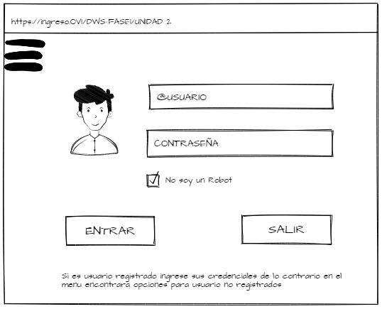

CREACION DEL MOCKUP DE LA PÁGINA PRINCIPAL DEL SITIO WEB
Se trata del montaje o la previa con la que un diseñador muestra a su cliente cuál sería el resultado final de su trabajo, un adelanto de lo que se quiere conseguir y ofrecer.. Por lo general es algo que, por ejemplo en el caso de las webs, no cuenta con funciones de ningún tipo.
